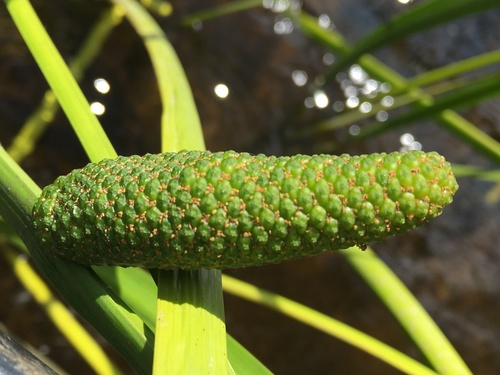

Native aquatic / wetlands of Alberta and Saskatchewan
The growth form, which is the first thing that decides where a plant can go.
19 plants
 Rob Foster, some rights reserved (CC BY), uploaded by Rob Foster") Arum-leaved ArrowheadSagittaria cuneata
Arum-leaved ArrowheadSagittaria cuneata Broad-leaved ArrowheadSagittaria latifoliaBroad-leaved Water-plantainAlisma triviale
Broad-leaved ArrowheadSagittaria latifoliaBroad-leaved Water-plantainAlisma triviale Michael J. Papay, some rights reserved (CC BY), uploaded by Michael J. Papay") BuckbeanMenyanthes trifoliata
BuckbeanMenyanthes trifoliata Radio Tonreg, some rights reserved (CC BY)") Canada WaterweedElodea canadensis
Canada WaterweedElodea canadensis Douglas Goldman, some rights reserved (CC BY-SA), uploaded by Douglas Goldman") CattailTypha latifolia
CattailTypha latifolia Andre Hosper, some rights reserved (CC BY), uploaded by Andre Hosper") Common BladderwortUtricularia vulgarisCommon Mare's-tailHippuris vulgaris
Common BladderwortUtricularia vulgarisCommon Mare's-tailHippuris vulgaris Rob Foster, some rights reserved (CC BY), uploaded by Rob Foster") Floating Marsh-marigoldCaltha natansGiant Bur-reedSparganium eurycarpum
Floating Marsh-marigoldCaltha natansGiant Bur-reedSparganium eurycarpum David Dyck, some rights reserved (CC BY), uploaded by David Dyck") Great BulrushSchoenoplectus acutusIvy-leaved DuckweedLemna trisulca
Great BulrushSchoenoplectus acutusIvy-leaved DuckweedLemna trisulca
Rat RootAcorus americanus Igor Balashov, some rights reserved (CC BY), uploaded by Igor Balashov") Sago PondweedStuckenia pectinataSmall Bottle SedgeCarex utriculata
Sago PondweedStuckenia pectinataSmall Bottle SedgeCarex utriculata Spiked Water-milfoilMyriophyllum sibiricum
Spiked Water-milfoilMyriophyllum sibiricum Tatiana Strus, some rights reserved (CC BY), uploaded by Tatiana Strus") Swamp HorsetailEquisetum fluviatileWater ParsnipSium suave
Swamp HorsetailEquisetum fluviatileWater ParsnipSium suave gonodactylus, some rights reserved (CC BY), uploaded by gonodactylus") Yellow Pond-lilyNuphar variegata
Yellow Pond-lilyNuphar variegata